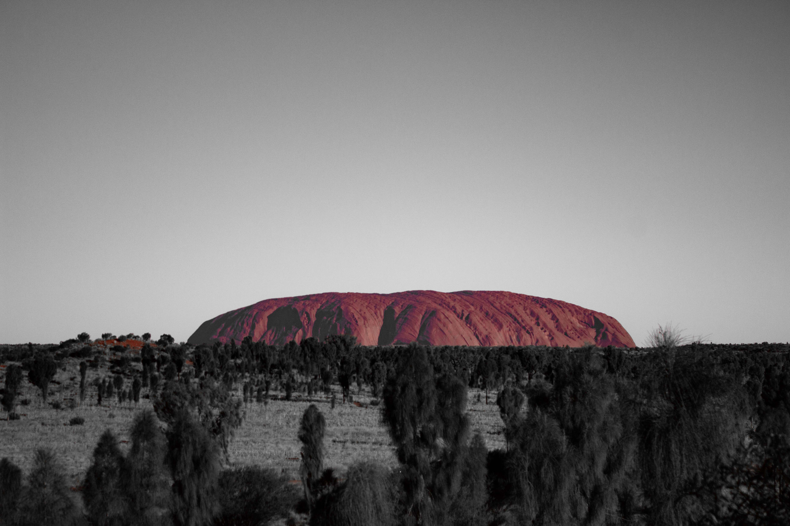
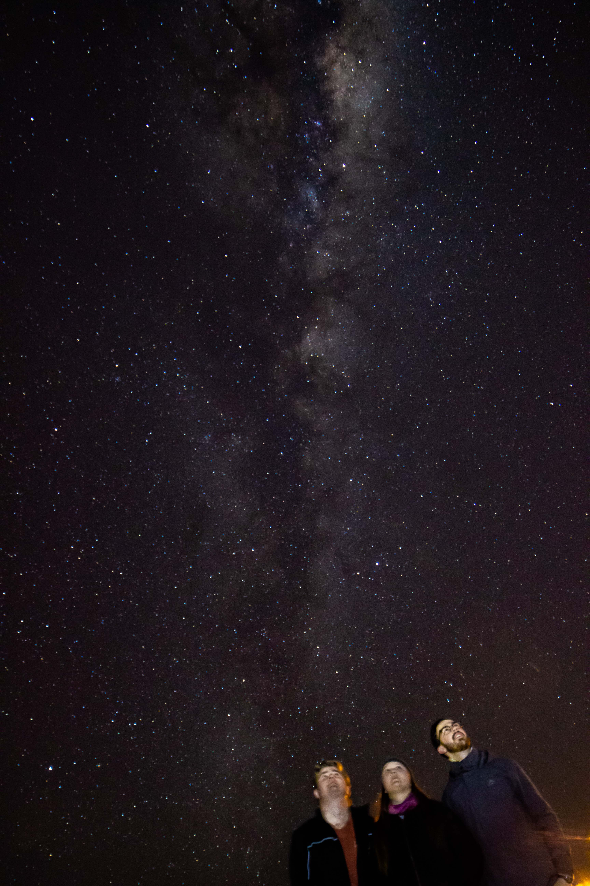
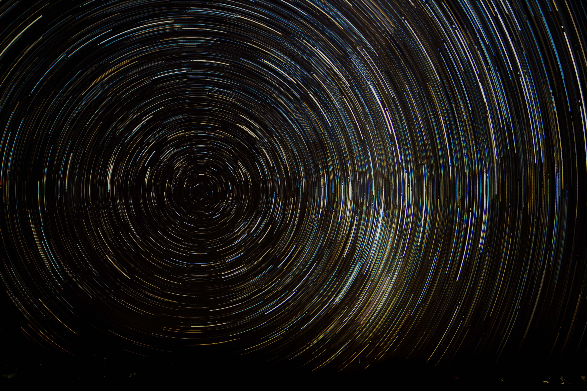
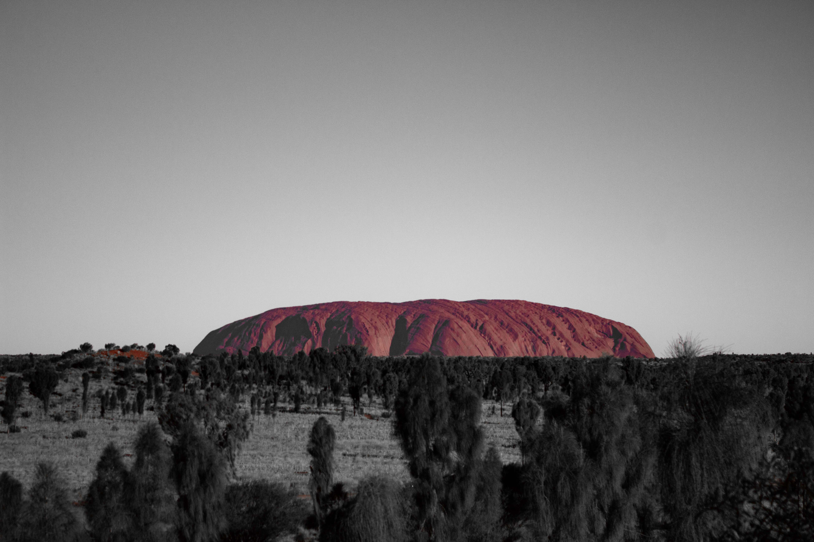
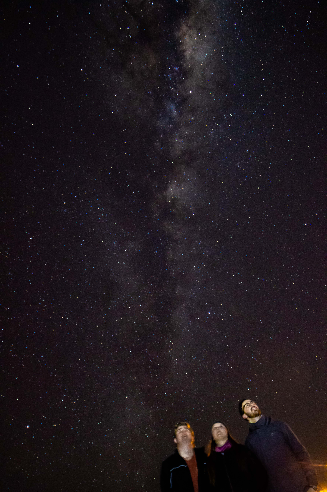
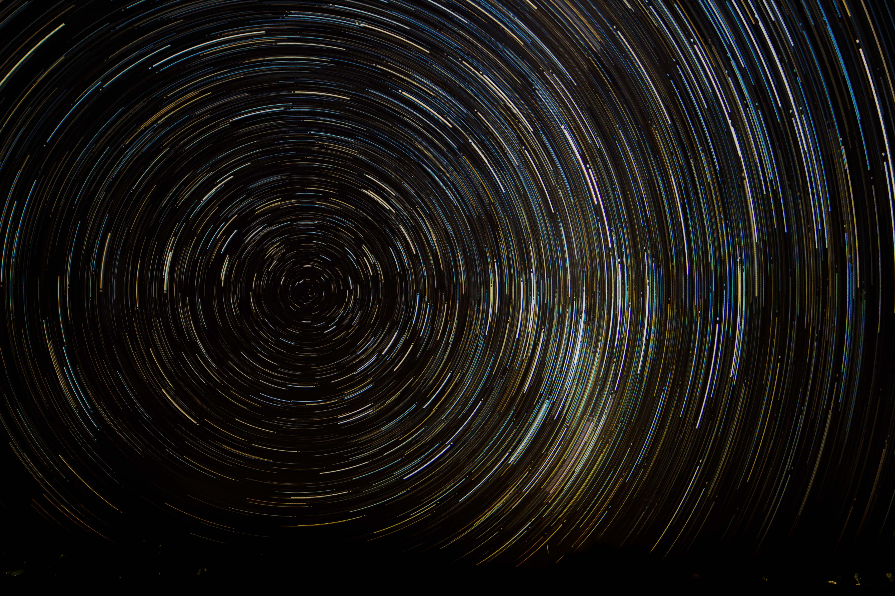

Outreach
Here is a list of some of my public talks at various events, in addition to the regular Stromlo outreach. You may download the talks by clicking on the names.
- "The universe had a rough childhood" at the Physics in the Pub, Canberra, October 2018
- "Unveiling the universe's past: with mirrors and calculators" at three engineering colleges India, March 2019
- Public talk for the Space Squad, Mt Stromlo, April 2019
- When the Universe was a baby Public talk on Facebook Live, April 2020
- Online talk for Mini Astro Workshop, October 2020
- Feast-of-Facts talk on Illumination and Rangoli for RSAA, October 2020
I am actively involved in outreach activities here at Mount Stromlo Observatory. We often host public open nights, school visits and private star gazing sessions.
At Stromlo we typically have a few (~5-8) school nights every month, depending on the season, where a group (20-50) of school children, mostly from outside Canberra, come to Mount Stromlo. Each night is hosted typically by 2-4 outreach volunteers, including students from RSAA and volunteers from the Canberra Astronomical Society (CAS). We take the visitors around on a tour of the facilities and heritage sites around the mountain, host Q&A and star gazing sessions.
Private nights are somewhat similar, but with fewer (~2-5) visitors. Public nights, on the other hand, witness over a thousand people coming up to attend the public talks and huge star gazing sessions, which run parallely. I enjoy talking to non-astronomers about the research that we do here!
So far I have been involved in over 30 outreach/public astronomy events, including the World Record Stargazing event 2018 at ANU. I also give talks aimed for the general public, including events like 'Physics in the pub'. In 2019 I talked at a few universities and engineering colleges in India to nurture the curiosity and interest of young students in astronomy.
I was the Astronomer in Residence at Ayers Rock Resort in Uluru for two weeks in July 2018. It was a very enriching experience to learn about Indigenous astronomy from the Star Talker team there. I enjoyed talking about Australian astronomy to the diverse tourist population visitng Uluru and helping them stargaze under the pristine dark skies of outback Australia. Here are some photos!
 




